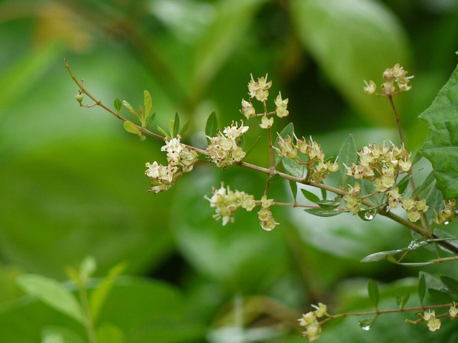

मेहंदीHenna
Lawsonia inermis · Lythraceae · FLR-0107

- Scientific name
- Lawsonia inermis L.
- Family
- Lythraceae
- Hindi
- मेहंदी
- Status here
- naturalized
- IUCN
- not evaluated
When to look कब देखें
Present all year.
Uses and possibilities उपयोग और संभावनाएँ
“Traditional medicine” means a documented traditional use, not a claim that it works. Nothing on this page is medical advice.
Drawn from the documented uses in the profile below, where each is labelled traditional, current or a research lead. All uses →
मेहंदी / Henna
Lawsonia inermis L. — Lythraceae
मेहंदी — वह झाड़ी जिसकी पत्तियाँ पीसकर हाथों पर लाल-भूरी बेल-बूटे बनते हैं और बाल रँगे जाते हैं। घर की बाड़ में, आँगन के कोने में, कभी-कभी खाली ज़मीन पर उगी हुई। गर्मी में छोटे सफ़ेद-गुलाबी फूलों का गुच्छा इतना महकता है कि दूर से पता चल जाता है। पत्ती का रंग धोने से नहीं जाता, यही इसका राज़ है।
Quick Identification त्वरित पहचान
| Feature | Description |
|---|---|
| Habit | Much-branched evergreen shrub 2–6 m, twiggy, often clipped as a hedge; some branches ending in a spine |
| Leaves | Opposite, small, 2–4 cm, elliptic, pointed at both ends, smooth and slightly leathery, on almost no stalk |
| Flowers | Tiny, 4-petalled, cream to pink, in branched clusters at the shoot tips, strongly fragrant |
| Fruit | A round brown capsule 5–7 mm, like a pepper-corn, splitting to shed many small pyramid-shaped seeds |
| Bark | Grey-brown, smooth on twigs |
| The test | Crush a leaf and rub it on the skin: an orange stain appears within minutes and darkens overnight |
Field tip: A neat small-leaved hedge shrub around a courtyard or along a garden path, with paired leaves and, in May and after the rains, sweet-smelling heads of tiny cream flowers. The stain test is unmistakable.
हिंदी — कैसे पहचानें: छोटी आमने-सामने की पत्तियाँ, टहनियों के सिरे पर कभी-कभी काँटा, महकते सफ़ेद-गुलाबी फूल, गोल भूरे फल। पत्ती मसलकर हाथ पर रगड़िए — नारंगी निशान बन गया तो मेहंदी है।
Morphology आकारिकी
Biometrics (cultivated and naturalised plants, northern India):
| Measurement | Range |
|---|---|
| Height | 2–6 m |
| Leaf | 2–4 × 1–2 cm |
| Flower diameter | 4–6 mm |
| Inflorescence | 10–25 cm |
| Capsule diameter | 5–7 mm |
| Seeds per capsule | 30–50 |
Stems: Slender, four-angled when young, the older branchlets sometimes ending in a short spine (hence the epithet inermis, "unarmed", was a poor choice: it refers to the typical cultivated form).
Leaves: Opposite, entire, elliptic to obovate, glabrous, with a tiny point; the leaf contains the dye lawsone, a naphthoquinone, in highest concentration in the young leaves of the shoot tips.
Flowers: In terminal and axillary panicles; calyx four-lobed, petals four, crumpled, greenish-white to rose; stamens eight. Scent heavy, strongest at evening, drawing bees by day and moths by night.
Fruit and seed: A globose capsule crowned by the persistent style, brown when ripe; seeds angular, many.
हिंदी: टहनियाँ पतली, चौकोर; पत्ती आमने-सामने, चिकनी; फूल चार पंखुड़ी, महकदार; फल गोल भूरा जिसमें बहुत से छोटे बीज। रंग देने वाला पदार्थ (लॉसोन) नई पत्तियों में सबसे ज़्यादा।
Behaviour & Ecology व्यवहार और पारिस्थितिकी
A shrub of hot, dry country from North Africa through Arabia to north-west India, grown for its dye for at least four thousand years and naturalised wherever it is planted. It needs heat to make its dye: plants in the humid, cooler east stain more weakly than those of Rajasthan, which is why the trade centres on Sojat in Pali district.
It tolerates drought, poor soil and salinity, resprouts after hard cutting, and lives for decades, which makes it an ideal hedge. The fragrant flowers draw Asian Honey Bee and hawkmoths; the dense twiggy growth shelters Common Tailorbird, Ashy Prinia and House Sparrow, and the leaves feed few insects, being bitter.
हिंदी: सूखे, गरम देशों की झाड़ी; गरमी जितनी ज़्यादा, रंग उतना गहरा — इसीलिए राजस्थान की मेहंदी मशहूर है। सूखा, खराब मिट्टी और कटाई सब सह लेती है, दशकों जीती है, इसलिए बाड़ के लिए अच्छी। फूलों पर मधुमक्खी और रात को पतंगे आते हैं।
Life Cycle / Phenology जीवन चक्र
| Month / season | Event |
|---|---|
| April–June | Main flowering, with the heat |
| July–September | New growth after the rains; leaves harvested for dye |
| September–October | Second flowering |
| November–February | Capsules ripen; growth slows |
| Year 2 onward | First dye harvest; a hedge yields for 20–30 years |
Raised from seed, which is slow and erratic, or from cuttings, which is the usual way.
हिंदी: गरमी में मुख्य फूल, बरसात के बाद पत्ती कटाई और दूसरा फूल, सर्दी में फल। दूसरे साल से पत्ती मिलने लगती है; बाड़ बीस-तीस साल चलती है।
Associated Species / Interactions संबंधित प्रजातियाँ
- Pollinators: Asian Honey Bee, Dwarf Honey Bee, and hawkmoths at dusk.
- Hedge birds: Common Tailorbird, Ashy Prinia, House Sparrow.
- Companions in the courtyard: Holy Basil, Aloe Vera and Neem are the other plants of the traditional home garden.
Pests and Diseases कीट और रोग
- Leaf-eating caterpillars occasionally; a leaf-mining moth in some years.
- Root rot in waterlogged ground, its main weakness in the paddy belt.
- Generally a healthy plant with bitter, little-eaten leaves.
Agricultural / Human Relevance कृषि प्रासंगिकता
Traditional and Ethnobotanical Use (documented uses; not medical advice):
- Body art. Dried leaf powder, mixed to a paste with water and a little lemon or tea, drawn on hands and feet at weddings and festivals; the stain is lawsone binding to the keratin of the skin. The mehndi ceremony is part of marriage across northern India regardless of community.
- Hair dye. The same paste colours hair and beards red-brown, and conditions them; combined with indigo for black. The main commercial use.
- Dyeing cloth, leather and wool. Orange-brown shades; now mostly replaced by synthetics.
- Traditional medicine. Leaves applied for skin complaints, burns and as a cooling paste for the head and feet; bark and seed recorded for liver and skin troubles in Kirtikar & Basu and Chopra. The modern caution is "black henna", which is not henna at all but a chemical dye (PPD) that burns skin.
- Hedge and shade. A living fence that is never browsed.
Today. India exports henna powder worldwide, from Rajasthan; the eastern districts buy rather than grow. A courtyard hedge gives a household its own supply, and a few hedges would supply a village mehndi artist.
Research direction (a lead, not a result). Lawsone and henna extracts are studied for antimicrobial and wound-dressing properties and as a natural textile dye; the practical question for this region is agronomic, whether dye quality in the humid east can be improved by harvest timing and drying, which growers' associations in Rajasthan have worked on.
हिंदी: हाथों की मेहंदी, बालों का रंग, और पुराने ज़माने में कपड़े-चमड़े का रंग — सब इसी पत्ती से। त्वचा पर ठंडक और घाव के लिए पारंपरिक उपयोग दर्ज है। "काली मेहंदी" मेहंदी नहीं, रसायन है, जो जला सकती है। राजस्थान से मेहंदी पूरी दुनिया जाती है; यहाँ आँगन की एक बाड़ घर भर के लिए काफी है।
Expected Locally स्थानीय रूप से अपेक्षित
Not a field record. Written from published accounts for eastern Uttar Pradesh. No confirmed local sighting yet — if you have seen it, that is what the atlas needs.
अभी तक स्थानीय पुष्टि नहीं। यह विवरण प्रकाशित स्रोतों से है, किसी अवलोकन से नहीं।
To be expected as a planted hedge or courtyard shrub in most villages, and occasionally self-sown on dry waste ground beside a garden. Whether local leaf gives a good stain, compared with bazaar powder, is a question nobody has written down for this district.
Distribution वितरण
Global range: Native to North and East Africa, Arabia and south-west Asia; cultivated and naturalised throughout the tropics and subtropics.
In India: Grown in every state; commercial cultivation concentrated in Rajasthan; naturalised on dry ground in the north-west.
In Uttar Pradesh: Common in gardens and hedges throughout; wild only as an escape.
In Basti district / eastern UP: Expected on homesteads; not in the open countryside.
Research Questions शोध प्रश्न
Anyone can investigate these | कोई भी इन प्रश्नों की जाँच कर सकता है
- Does leaf from a village hedge stain as well as bazaar powder? / क्या गाँव की बाड़ की पत्ती बाज़ार के पाउडर जितना रंग देती है? — Make paste from both; compare on the same hand after 24 hours.
- When in the year is the local leaf strongest? — Repeat the test in May, September and January.
- Which insects come to the flowers at dusk? / शाम को फूलों पर कौन से कीट आते हैं? — Sit by a flowering hedge with a torch.
- Who in the village draws mehndi, and where does their powder come from? — Ask; the answer maps a small economy.
- Does a mehndi hedge host more or fewer birds than a lantana one? — Count birds in each for ten minutes on several mornings.
Similar Species मिलती-जुलती प्रजातियाँ
| Species | How to tell apart | हिंदी |
|---|---|---|
| Jasmine, wild and garden (Jasminum species) | Climbing or lax, leaves often compound, flowers white and tubular with 5+ lobes, no capsule | सफ़ेद नली जैसे फूल, बेल |
| Indian Jujube (Ziziphus mauritiana), young hedge | Alternate leaves with three veins from the base, thorns paired, fruit a fleshy drupe | पत्ती में तीन नसें, फल गूदेदार |
| Privet-like garden hedges (Ligustrum, Duranta) | Opposite leaves too, but no skin stain and fruit a berry | पत्ती से रंग नहीं |
Field rule: Opposite small leaves that stain skin orange when crushed, and heads of tiny fragrant four-petalled flowers, is henna.
Taxonomy & Classification वर्गीकरण
Original description. Linnaeus, Species Plantarum 1: 349 (1753). The genus honours Isaac Lawson, a Scottish physician and friend of Linnaeus; inermis, "unarmed". Linnaeus also named a spiny form Lawsonia spinosa, now treated as the same species.
Subspecies. Monotypic — no subspecies are currently recognised; the only species in its genus.
Family and order placement. Lythraceae, the loosestrife family, which also holds pomegranate and crape myrtle; order Myrtales.
Phylogenetic notes. Molecular studies place Lawsonia within the Lythraceae near Lagerstroemia (the crape myrtles). Lawsone, the dye, is a 2-hydroxy-1,4-naphthoquinone found almost nowhere else in plants.
IUCN status rationale. Not evaluated. Widely cultivated; wild populations in Africa and Arabia not assessed.
Photo Gallery फोटो गैलरी
Photos needed आवश्यक फोटो
- [ ] Courtyard hedge in flower (बाड़)
- [ ] Close-up of leaves and flower cluster (पत्ती और फूल)
- [ ] Leaf-paste stain on a hand (रंग)
Atlas Connections संबंधित प्रजातियाँ
- Holy Basil — the other plant of every courtyard
- Indian Jujube — the hedge plant it is most often mixed with
- Asian Honey Bee — on the fragrant flowers by day
- Common Tailorbird — nests in the dense twigs
References संदर्भ
- Linnaeus, C. (1753). Species Plantarum, vol. 1, p. 349. Stockholm. [original description]
- Hooker, J.D. (1879). The Flora of British India, vol. 2. L. Reeve, London.
- Duthie, J.F. (1903). Flora of the Upper Gangetic Plain, vol. 1. Government Printing, Calcutta.
- Kirtikar, K.R. & Basu, B.D. (1935). Indian Medicinal Plants, 2nd ed., vol. 2. Lalit Mohan Basu, Allahabad.
- Chopra, R.N., Nayar, S.L. & Chopra, I.C. (1956). Glossary of Indian Medicinal Plants. CSIR, New Delhi.
- Council of Scientific and Industrial Research (1962). The Wealth of India: Raw Materials, vol. 6 (L–M). CSIR, New Delhi.
- Watt, G. (1891). A Dictionary of the Economic Products of India, vol. 4. Government Printing, Calcutta.
- GBIF Occurrence Data — Lawsonia inermis, India (2026).
Source file: species/flora/weeds/mehndi.md